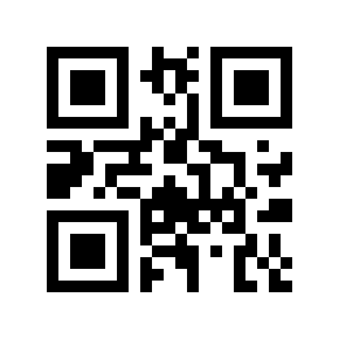

On the Minimum Number of Module Inversions Required to Redirect the Decoding of a Version 1 QR Code
Abstract
We determine, exactly, the minimum number of individual modules (printed squares) of a Version 1, error-correction level L QR code that must be inverted so that a bounded-distance decoder reports a valid payload different from the one encoded: the minimum is 5. The lower bound is a single subtraction — the code’s minimum symbol distance d = 8 minus its correction radius t = 3 — and exhaustive enumeration of the minimum-weight difference codewords of the underlying RS(26, 19) code (1,562,275 supports × 255 scalings) finds exactly 595 that attain it. The minimum is not merely a gibberish-producing curiosity: a code encoding https://x.com, altered in exactly five modules, is decoded by the production library ZXing-C++ as https://8.com. The same method completes Version 1 at the remaining levels: the exact minima are 6 for M and 8 for Q, both attaining the floor d − t, and 12 for H, whose floor is 10 — the floor is a lower bound, and at this level it is not attainable.
Keywords: QR codes; Reed–Solomon codes; minimum distance; bounded-distance decoding; binary weight; exhaustive enumeration.
1. Introduction
A QR code is usually discussed in units of codewords: eight-module bytes protected by a Reed–Solomon code. The person inverting the colours, however, acts in units of modules: single black or white squares. This paper asks a question that sits between those two units, and that, to the author’s knowledge, has not previously been answered exactly for any QR version or error-correction level: how few printed squares must be changed so that a decoder reads the code as something else?
We study the decoder-effective problem. The altered pattern need not itself be a valid encoding of anything; it need only lie within the correction radius of a different valid code, so that the decoder’s own error correction completes the transformation and returns that code’s payload. A bounded-distance decoder is a decoder that returns the unique codeword within the guaranteed correction radius when one exists, and otherwise reports failure; this is what we mean throughout by a standards-compliant scanner. A real decoder does not ask whether the received pattern is valid — it asks which valid code is nearest — so there is no need to construct a valid code at all: only to reach the boundary of another code’s correction region, and let the decoder perform the remaining work.
Related work. The attacker who edits a printed code with a pen was introduced by Kieseberg et al. [4], whose 2012 follow-up [5] demonstrates — per instance, one-directionally (white modules blackened), and with no claim of minimality — that blackening 20 modules changes a code for http://yahoo.at into one decoding as http://yghqo.at. The closest prior work is Bajaj [6], who asks for the QR code closest to a given one and, from brute-force tests on near-full-length payloads, conjectures Version 1 minima of 7, 9, 14 and 20 for levels L, M, Q and H respectively (his Table 6), with no proof of minimality and no count of the optimal difference codewords; his targets are other canonical encodings. The results here differ in kind: they are exact — a lower bound met by exhaustive enumeration — they include the counts of optimal difference codewords, and they cover short payloads, where pad codewords that decoders ignore lower the cost; that mechanism accounts for the gap at level L, where the conjectured 7 becomes an exact 5.
2. The Version 1-L result
We fix the smallest QR configuration. A Version 1 symbol is a 21 × 21 module matrix; at error-correction level L its data and check codewords form a single Reed–Solomon block RS(26, 19) over GF(256): 19 data codewords and 7 check codewords. Each codeword is printed as exactly 8 modules, and a module inversion (or flip) is the toggling of one bit of one codeword. The code is maximum-distance separable, so its minimum symbol distance is d = 26 − 19 + 1 = 8, and a bounded-distance decoder corrects up to t = ⌊(d − 1)/2⌋ = 3 erroneous symbols. Version, error-correction level and mask pattern are held fixed, and inversions are counted in the data area only.
Theorem 1. (Decoder-effective minimum for Version 1-L.) The minimum number of module inversions that transforms a Version 1-L QR code into a pattern decoded, by a bounded-distance decoder, as a different valid payload is exactly 5.
Proof. Lower bound. Let A be the encoded codeword and B any other valid codeword. By the minimum distance of RS(26, 19), A and B differ in at least d = 8 symbol positions. A received pattern R is decoded as B only if R lies within the correction ball of radius t = 3 about B, so by the triangle inequality on symbol distance, R differs from A in at least 8 − 3 = 5 symbols: at least five symbols must be fully converted toward another codeword. Each differing symbol costs at least one module inversion, so any decoder-effective transformation costs at least 5 inversions; in particular, no pattern of 4 inversions can be decoded as anything other than A. Sharpness. It remains to exhibit a transformation of cost exactly 5. Take a difference codeword Δ of minimum symbol weight 8 that contains at least five one-bit symbols among its eight nonzero symbols. Do not add the whole of Δ — its total binary weight is at least 8. Flip only five of its one-bit symbols and leave the other three nonzero symbols unflipped: the resulting pattern is exactly 5 module inversions from A and exactly 3 symbols from the neighbouring codeword A + Δ, hence inside that codeword’s correction ball. The enumeration below shows that such Δ exist in number, and §3 verifies one instance end to end against a production decoder. The lower bound is therefore attained, and the minimum is exactly 5. ∎
d(A, B) ≥ 8, t = 3 ⟹ inversions ≥ 8 − 3 = 5
Enumeration. Every weight-8 support of a minimum-weight difference codeword was generated: there are C(26, 8) = 1,562,275 such supports. On each support the codeword is determined up to a nonzero scalar multiple, giving 255 scalings per support and some 398 million candidate codewords in total, each scored by the number of one-bit symbols it contains. The enumeration is exhaustive, not sampled. Exactly 595 difference codewords contain at least five one-bit symbols and so support a five-inversion construction: 580 with exactly five one-bit symbols and 15 with exactly six (for those, any five of the six may be chosen). The complete list is distributed with the paper as cost5_codewords.txt, so the count is independently checkable rather than merely reported.
3. The main example: https://x.com → https://8.com
Most five-inversion targets decode to garbled byte-mode text — different from the encoded payload, as the theorem requires, but not presentable. One is clean, and it is the example we feature. A code encoding https://x.com (Version 1-L, mask pattern 0), altered in exactly the five modules listed in Figure 1, is decoded by ZXing-C++ as https://8.com; the verification was performed end to end on the rendered patterns shown there. The construction uses a single difference codeword, in hexadecimal 000000000000000000040000000000db01000100086500320080. Its one-bit symbols are at positions 9, 16, 18, 20 and 25 (0-indexed); flipping exactly those five — the difference’s other three nonzero symbols, at positions 15, 21 and 23, being left unflipped — inverts the five modules of Figure 1, and the altered pattern lies at symbol distance 5 from the base codeword and symbol distance 3 from the target, within the correction radius.
The instance turns on a slack in the encoding that a canonical-encoding analysis misses. The target codeword agrees with the canonical encoding of https://8.com on every payload symbol, and differs from that canonical encoding only in the pad codewords, together with the error-correction codewords that follow from them. A decoder stops reading at the payload terminator and never validates the pad codewords, so the set of codewords that decode to a given text is much larger than that text’s single canonical encoding — and a member of that larger set can lie at decoder-effective distance 5 even when the canonical encoding does not.
8.com is a well-formed URL string, but the name cannot be registered or purchased: it is reserved by IANA, which in December 1993 reserved all single-character second-level domains under .com, .net and .org. Its interest here is as a clean, well-formed decoded string, not as a destination. Nor is the pair an isolated accident: sweeping 48,762 base payloads against all 595 difference codewords yields 28,394 clean URL→URL pairs, every one of them a single host character changed by XOR 0x40 — x→8 is one instance of a completely characterised family — and no clean phrase→phrase pair.


- (13, 11)
- (11, 0)
- (9, 8)
- (10, 15)
- (1, 9)
- 9
- 16
- 18
- 20
- 25
ZXing-C++ decode after 5 inversions: https://8.com
4. The remaining Version 1 levels
The analysis generalises verbatim to the other error-correction levels of Version 1. Each level is still a single Reed–Solomon block of length 26 over GF(256); only the number of data codewords changes, and with it d and t. For a difference codeword Δ, the decoder-effective cost is its total binary weight minus the t largest symbol bit-weights — the t symbols the decoder corrects for free — so the universal lower bound, the sphere floor, is d − t, attained exactly when a minimum-weight difference codeword carries at least d − t one-bit symbols. We repeated the exhaustive enumeration of every minimum-weight support for levels M, Q and H with the same machinery; as a validation, the generalised enumerator reproduces the level-L count of 595 exactly. Table 1 gives the complete Version 1 picture: L, M and Q attain their floors — M comfortably, Q with only seven optimal codewords in the whole code — while H does not. For H, cost 11 could also arise from a codeword of symbol weight 19, which would need at least 11 one-bit symbols; a second phase enumerated all 657,800 weight-19 supports and found none at cost 11 — though exactly two attain cost 12 — and a further exhaustive count of the weight-20 class found exactly one further codeword at cost 12, while any codeword of symbol weight 21 or more costs more than 12 by the symbol bound alone. H’s exact minimum is therefore 12, two above its floor: the floor is a lower bound, and at this level it is not attainable, because attainment is a property of the binary weights of minimum-weight codewords, not of the symbol distance alone. The count of H’s optimal codewords is accordingly exact: seven in total — four of minimum weight 18, two of weight 19 and one of weight 20.
| Level | Code | d | t | Floor d − t | Exact minimum | Optimal difference codewords |
|---|---|---|---|---|---|---|
| L | RS(26, 19) | 8 | 3 | 5 | 5 | 595 |
| M | RS(26, 16) | 11 | 5 | 6 | 6 | 705 |
| Q | RS(26, 13) | 14 | 6 | 8 | 8 | 7 |
| H | RS(26, 9) | 18 | 8 | 10 | 12 | 7 (4 of weight 18, 2 of weight 19, 1 of weight 20) |
5. A remark on real decoders
The minima of Table 1 are exact for bounded-distance decoders. Whether a specific production decoder actually decodes an optimal pattern is an empirical question, and for the zxing-cpp build tested the answer has been pinned down exactly — and the constraint is not error correction, which corrects the full radius on every pattern the decoder accepts, and rejects most pad-slack targets even rendered error-free. ZXing’s acceptance is exactly: a valid codeword, plus a strictly grammatical segment stream, plus non-empty decoded content. A pad-slack target is a valid Reed–Solomon codeword but a non-canonical bit stream — after the payload segment, the remaining bits are leftover data instead of the standard terminator and pad bytes — and ZXing parses the entire segment stream strictly, rejecting tails that read as reserved mode indicators or over-length segments; where the tail happens to read as a terminator immediately after the payload, as in the x.com → 8.com instance of §3, the codeword decodes normally. Separately, ZXing suppresses empty results: it returns nothing for a codeword that decodes to no content. This two-rule model — strict segment-stream validation of non-canonical tails, plus empty-content suppression — predicts ZXing’s verdict on all 712 codewords tested, with no exceptions; in particular, none of the seven optimal level-Q patterns is decoded by ZXing, although a reference bounded-distance decoder corrects all of them. Nor is any of this a departure from the standard: ISO/IEC 18004 fixes the symbology, the canonical encoding and an error-correction capability of t symbols, but does not oblige a decoder to accept every codeword that bounded-distance correction can reach, still less a non-canonical bit stream no conforming encoder would produce. The claims of this paper are therefore stated, precisely, for a bounded-distance decoder; a real scanner additionally subjects the corrected codeword to full segment-stream validation, which non-canonical targets can fail even with no channel errors at all.
6. Discussion and limitations
The results are proved for Version 1 at all four error-correction levels, with inversions counted in the data area only and version, level and mask pattern held fixed; the format-information strip is protected by its own BCH code and is a separate problem, outside the scope of the count. Three extensions are natural. Larger versions involve multiple interleaved Reed–Solomon blocks, and the level-H case is the cautionary one: their floors d − t are lower bounds to be tested, not answers. A prescribed target — one specific destination chosen in advance — remains more expensive than landing somewhere presentable: measured canonical-to-canonical, the cheapest clean targets from a short URL base cost 9–10 inversions, and whether pad slack lowers prescribed-target costs in particular cases has not been exhaustively computed; the exact valid-to-valid problem, in which the altered pattern must itself encode the new payload perfectly, is likewise open (our best construction for Version 1-L costs 16 inversions). Finally, a practically suggestive variant restricts all inversions to the white-to-black direction; the enumeration can be re-scored under this restriction, and the variant is left as an open computation.
Data and Code Availability
All materials required to reproduce the enumeration and the worked example accompany this paper in its public repository: github.com/BetterPelicans/qr-five-flips.
- prove5b.c + H_matrix.h
- The exhaustive C enumerator for level L — every weight-8 support × every nonzero scaling.
- cost5_codewords.txt
- All 595 difference codewords supporting a five-inversion construction.
- verifyX.py
- End-to-end verification of the featured https://x.com → https://8.com instance of §3 — difference codeword, flip coordinates, and the ZXing-C++ decode of the rendered patterns.
- sweep.py
- The sweep of §3 — 48,762 bases × all 595 difference codewords, yielding 28,394 clean URL→URL pairs, all by the XOR 0x40 single-character mechanism.
- prove_v1.c + genH.py
- The generalised enumerator of §4 — every minimum-weight support for levels M, Q and H; reproduces the level-L count of 595 exactly as a validation.
- phase2_H.c
- The level-H phase-2 scan of §4 — all 657,800 weight-19 supports, excluding a cost of 11 for Version 1-H.
- count_w20.c
- The level-H weight-20 count of §4 — exhaustive enumeration of the weight-20 class, finding exactly one further optimal codeword at cost 12.
- cost_M.txt / cost_Q.txt / cost_H12.txt / cost_H_w19.txt / cost_H_w20.txt
- The optimal difference codewords of §4 — 705 at cost 6 (M), 7 at cost 8 (Q), 7 at cost 12 (H: 4 of weight 18, 2 of weight 19, 1 of weight 20).
- RESULTS.md
- The written result — method, proof, and caveats in full.
- Demo images
- Rendered original and inverted patterns used for the ZXing-C++ checks, including the demoX set (demoX_A / demoX_B / demoX_P / demoX_compare) for the featured https://x.com → https://8.com instance.
Acknowledgements
Better Pelicans used Muse (Meta), accessed November 2026, extensively in this work: to design and implement the enumeration programs, generate and validate the demonstration codewords, search the prior literature, and draft portions of the text. All reported counts and examples were independently checked with separate implementations and scanner software (reedsolo; ZXing), and the enumeration code and result files accompany this paper.
References
- ISO/IEC 18004:2015, Information technology — Automatic identification and data capture techniques — QR code bar code symbology specification, International Organization for Standardization, Geneva, 2015.
- I. S. Reed and G. Solomon, “Polynomial codes over certain finite fields,” Journal of the Society for Industrial and Applied Mathematics, 8(2):300–304, 1960.
- ZXing-C++, open-source barcode image processing library (C++ port of ZXing), used for the end-to-end verification of §3. github.com/zxing-cpp/zxing-cpp.
- P. Kieseberg, M. Leithner, M. Mulazzani, L. Munroe, S. Schrittwieser, M. Sinha, and E. Weippl, “QR Code Security,” in Proceedings of the 8th International Conference on Advances in Mobile Computing and Multimedia (MoMM 2010), Paris, France, 2010.
- P. Kieseberg, S. Schrittwieser, M. Leithner, M. Mulazzani, A. Gosch, J. Kirsch, and D. Lhee, “Malicious Pixels,” in Trustworthy Ubiquitous Computing, Atlantis Press, 2012.
- B. S. Bajaj, “Reliability on QR codes and Reed-Solomon codes,” arXiv:2407.17364, 2024.